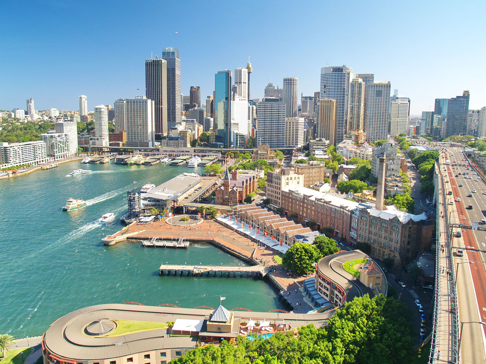

Немного о городе
В Сиднее находятся самые высокие здания страны — Сиднейская телебашня (259
м) и штаб-квартира крупнейшей страховой компании (244 м). В Сиднейской
опере помимо концертного зала есть драматический оперный театр, кинозал,
рестораны, библиотека. В городе множество садов и парков, крупнейший
из них — Королевский ботанический сад. На другом северном берегу залива
(Таронга) — один из лучших зоопарков мира. В районе глубоководного
залива Питтуотер находятся фешенебельные, утопающие в зелени (среди
которой можно увидеть коала) пригороды — Мона-Вэйл, Ньюпорт, Авалон,
Палм-Бич. Сидней — деловой центр страны, ее финансовая столица. Здесь
сосредоточена основная часть обрабатывающей промышленности штата.
